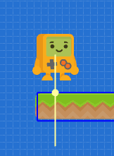
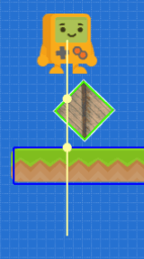
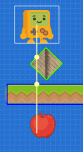
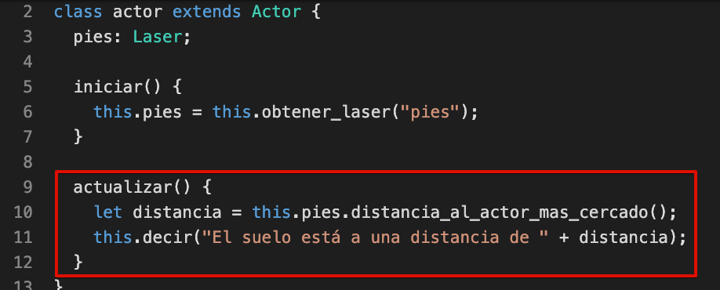
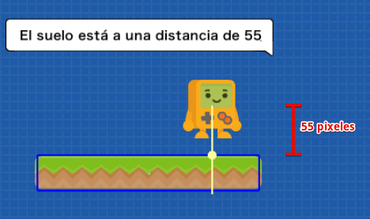

Los lasers nos permiten detectar distancias y colisiones entre un actor y otros mediante rectas.
Por ejemplo, en la siguiente imagen tenemos un actor con un laser para detectar si existen plataformas debajo de sus pies:

Cada actor puede tener tantos lasers como quiera, la idea de esta característica de pilas es que podamos permitirle a los actores detectar distancias y futuras colisiones para reaccionar a ellas.
Los lasers se pueden crear directamente desde el editor, tenemos que seleccionar un actor y luego pulsar el botón “crear laser” dentro del panel de propiedades:
Una vez creado el laser, se tiene que ajustar la longitud y la rotación:

Por ejemplo, si nos interesa saber si el actor está cerca de tocar el suelo o no, podemos reducir la longitud y colocar la rotación en -90 grados para que el laser apunte hacia abajo:

Vas a notar que los lasers reaccionan rápidamente a las colisiones con otros actores dentro del editor. La linea del laser mostrará círculos en cada contacto que realice contra otros actores:

Eso sí, el laser solo detectará el contacto con aquellos actores que tengan una figura física asignada. Por ejemplo aquí se reconocen colisiones con una caja y la plataforma, pero no con la manzana (ya que no tiene figura física).

Una vez que creamos el laser desde el editor, podemos escribir código para comenzar a interactuar con los lasers cuando el juego esté en funcionamiento.
Veamos esto con un ejemplo, queremos que nuestro personaje detecte si está sobre una plataforma o no. Así que podemos crear un laser llamado “pies” y colocarlo en dirección al suelo así:

Ahora podemos ir al código del actor, crear un atributo llamado pies y luego vincularle el laser llamando a la función obtener_laser así:

Y con ese código, ahora vamos a poder hacerle consultas en cualquier momento al laser que vinculamos. Estas son algunas de las funciones que incluyen los lasers:

Tenemos funciones para consultar cuántos actores se encuentran en el camino del laser, cual es el más cercano, a qué distancia está cada actor y muchas cosas más.
Por ejemplo, podríamos hacer que el actor diga en todo momento a qué distancia está el suelo usando esta función dentro del método actualizar:

Y lo que deberíamos ver en la pantalla del juego, o ingresando en modo pausa, es que el laser nos informa que hay 55 pixeles entre el actor (desde donde comienza el laser) hasta la primer colisión con la plataforma:

Ten en cuenta que la función distancia_al_actor_mas_cercado del laser, siempre nos retornará un número. Y en caso de que no exista ningún actor cercano, el número que nos retornará será igual a la longitud del laser.
En este caso, como la longitud del laser es 100, si no encuentra colisión con nada nos retornará ese valor:

Al principio parece raro que nos retorne la longitud del laser, pero de hecho es algo muy práctico, porque casi siempre las distancias se van a evaluar usando la palabra reservada if y con alguna comparación.
Observá este ejemplo, si queremos animar al actor de acuerdo a la distancia con la plataforma podemos escribir un código en el método actualizar como este:

y el resultado va a ser similar a este:

Es decir, gracias a que el laser nos retorna la distancia como un número, podemos decirle al actor que si la distancia es menor a 40 queremos que muestre la animación “correr” y si esa distancia es mayor a 40 queremos que muestre la animación de “salto”.
Los lasers que creamos desde el editor son ideales para visualizar, configurar y comprender fácilmente de qué se trata este concepto de distancia y colisiones en linea recta.
Sin embargo, hay casos muy puntales en donde nos interesa calcular distancias o colisiones pero directamente desde el código. Para estos casos pilas incorpora lasers “instantáneos”.
Los lasers “instantáneos” se pueden crear con la función laser, que espera la referencia a un actor, un punto inicial y uno final. Y como resultado nos retornará una lista con todas las colisiones que se produzcan en el camino del laser:
let resultado = this.pilas.laser(this, this.x, this.y, this.x + 400, this.y);
this.pilas.observar("resultado", resultado);
this.pilas.observar("cantidad de colisiones", resultado.length);También hay otra función muy similar llamada laser_al_primer_actor que además acepta una etiqueta, para que podamos detectar distancias contra un tipo de actor en especial.
Estas dos funciones son bastante avanzadas, si queres saber más acerca de ellas te recomendamos ver el glosario de funciones.